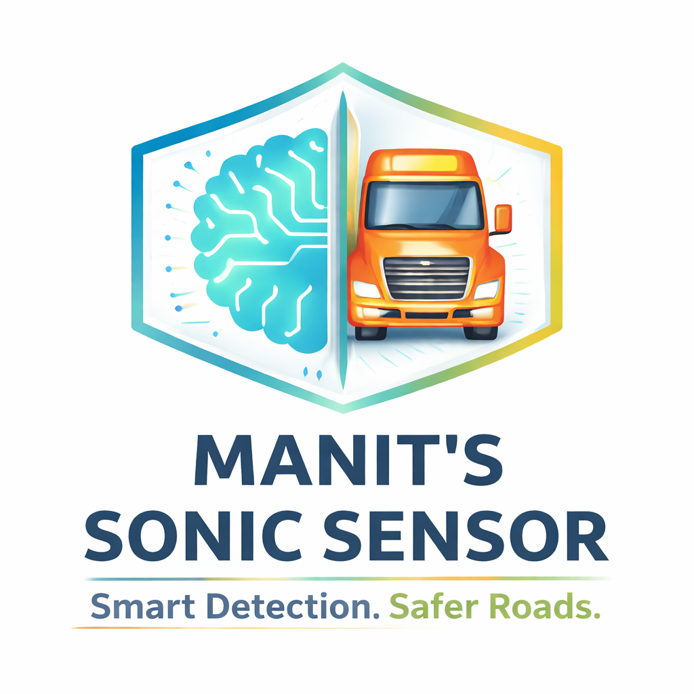
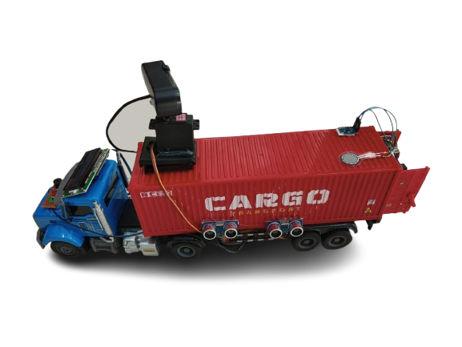

Smart System. Safe Roads. Better Future.


Large vehicles like trucks and buses have big blind spots where drivers cannot see nearby objects. Because of this, accidents can happen during turning, lane changing, or reversing. Many old vehicles do not have modern safety systems, which increases the risk on roads.
Manit's Sonic Sensor is a smart safety system that uses sensors and AI to detect objects around the vehicle. It helps drivers by giving real-time alerts when something comes close, so they can take quick action and avoid accidents.
This system uses ultrasonic sensors to measure distance, an LCD to display data, and an AI camera to identify objects like people, vehicles, or animals. A servo motor moves the camera towards danger, making the system smart and responsive.
Green LED → Safe (No object nearby)
Red LED + Buzzer → Danger (Object detected)
This simple alert system helps drivers understand the situation quickly.
This product is designed for truck drivers, bus drivers, transport companies, and owners of old vehicles who do not have advanced safety systems. It is especially useful in crowded city roads.
This project can reduce road accidents, protect pedestrians and cyclists, and improve driver awareness. It can help save lives and make roads safer for everyone.
In the future, this system can be connected to mobile apps, include voice alerts, and be integrated into smart vehicles. It can also be upgraded with automatic braking systems.
This system is low cost, easy to install, and works even in old vehicles. It combines AI and sensors in a simple way, making it practical and effective.
Name: Manit Sharma
Team: CodeRed Guardian
Email: manit@coderedguardian.com
School: DPS Hinjawadi